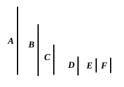
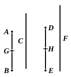
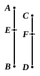
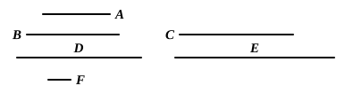
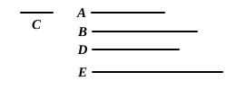
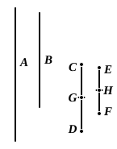
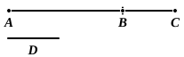
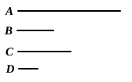
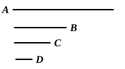

BOOK VII. PROPOSITIONS.¶

Given three numbers not prime to one another, to find their greatest common measure.

If a number be parts of a number, and another be the same parts of another, alternately also, whatever parts or part the first is of the third, the same parts or the same part will the second also be of the fourth.

If, as whole is to whole, so is a number subtracted to a number subtracted, the remainder will also be to the remainder as whole to whole.

If a number by multiplying two numbers make certain numbers, the numbers so produced will have the same ratio as the numbers multiplied.

If two numbers by multiplying any number make certain numbers, the numbers so produced will have the same ratio as the multipliers.

The least numbers of those which have the same ratio with them measure those which have the same ratio the same number of times, the greater the greater and the less the less.
If two numbers be prime to one another, and each by multiplying itself make a certain number, the products will be prime to one another ; and, if the original numbers by multiplying the products make certain numbers, the latter will also be prime to one another [and this is always the case with the extremes].

If two numbers be prime to one another, the sum will also be prime to each of them ; and, if the sum of two numbers be prime to any one of them, the original numbers will also be prime to one another.

If a number be measured by any number, the number which is measured will have a part called by the same name as the measuring number.

If a number have any part whatever, it will be measured by a number called by the same name as the part.